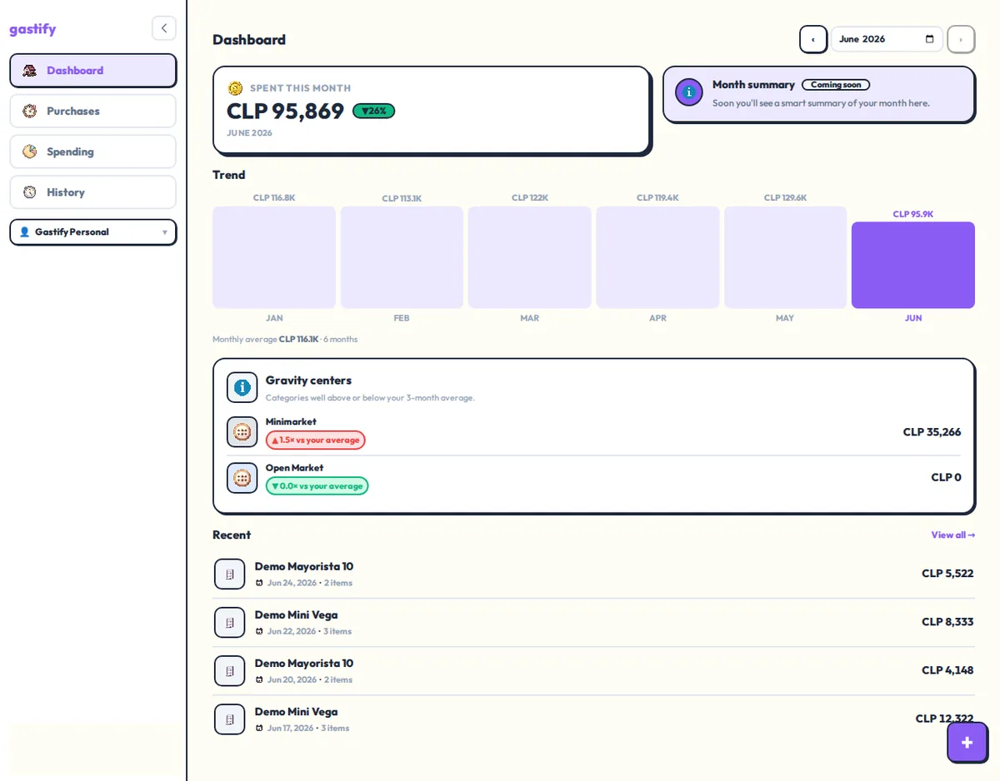
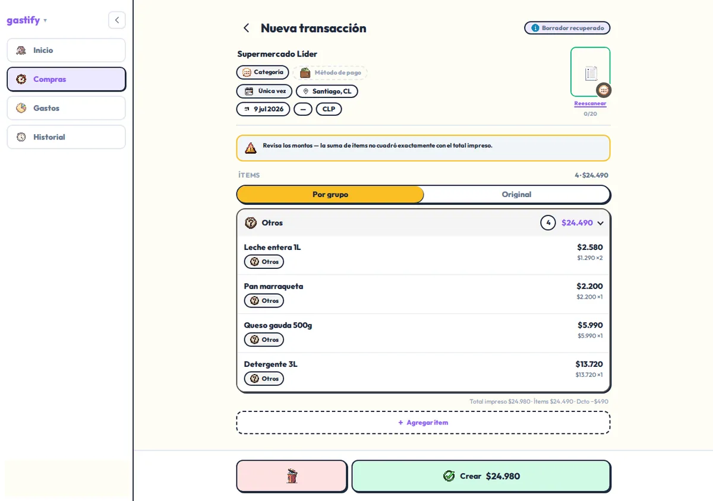
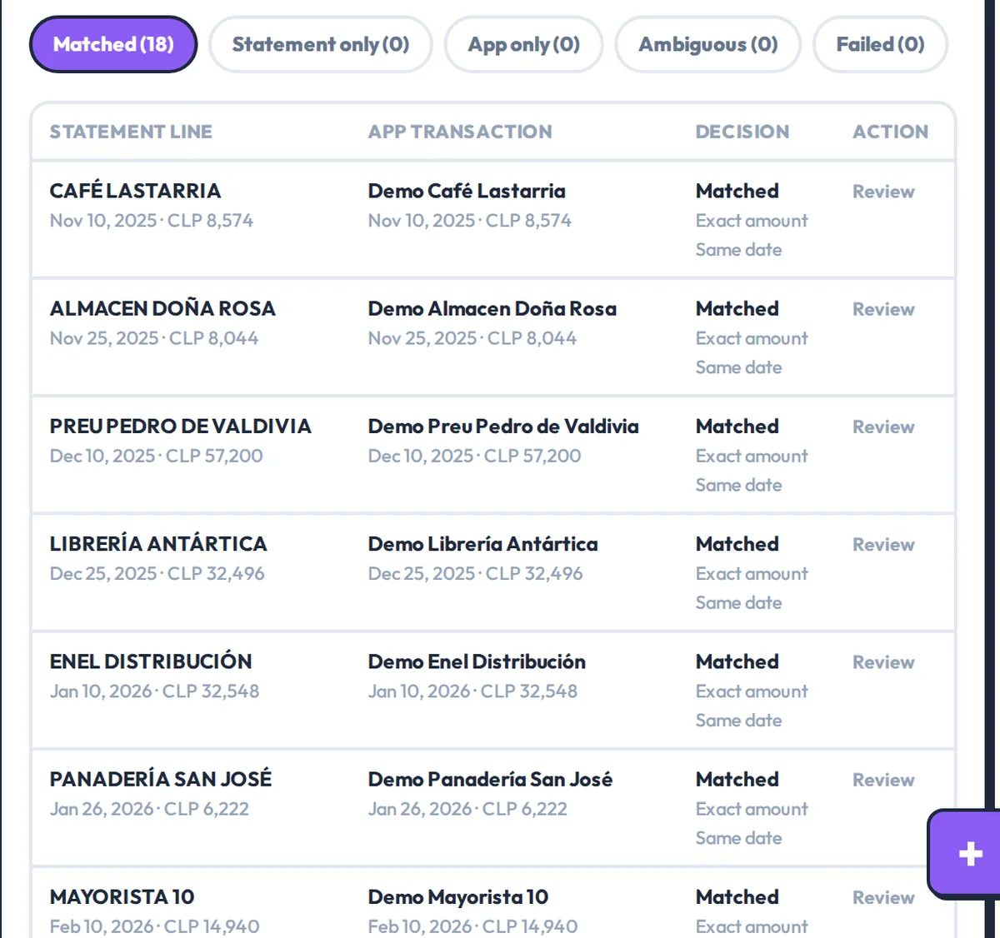
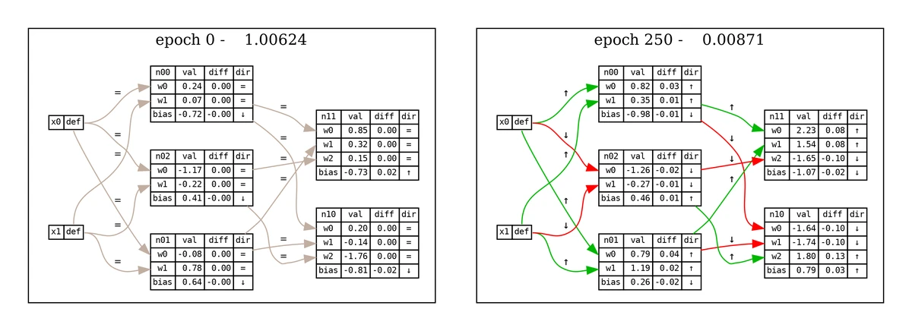
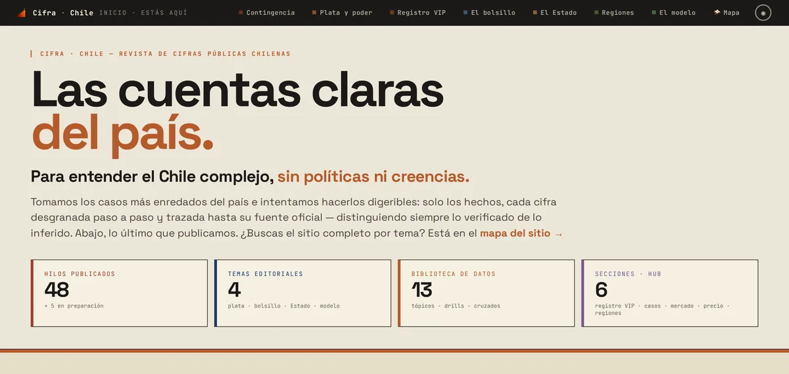
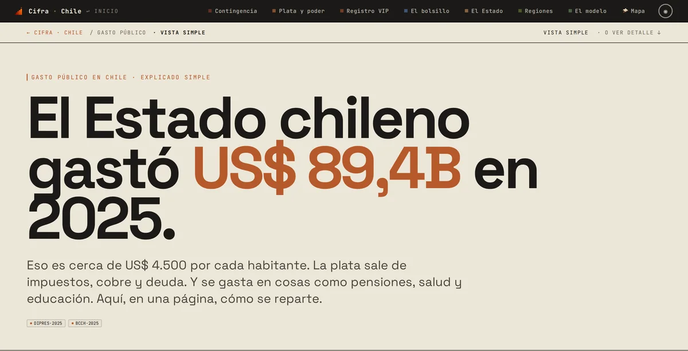
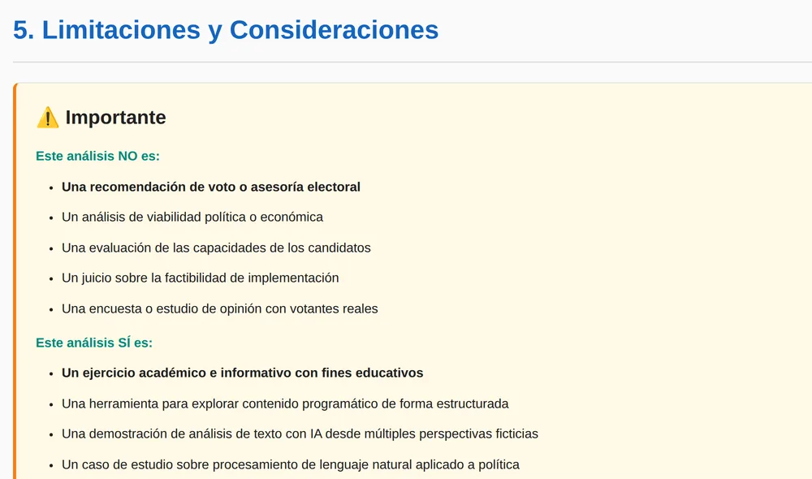

Chile · Remoto · UTC-3 / UTC-4, se superpone con el horario del Este de EE. UU.
Gabriel Cárcamo
Ingeniero Backend Senior · Python e IA
Más de 11 años en software, más de 10 de ellos como ingeniero en Experian (2014–2025). Construí pipelines ETL en Shell, SQL y más tarde Python, y desde 2020 desplegué y robustecí modelos de riesgo crediticio para los clientes bancarios de Experian (Chase, Citi, Bank of America) en mainframe, AIX/Linux y AWS, moviendo y validando datos para modelos que procesaron más de 300 millones de puntos de datos. Desde fines de 2025 construyo funcionalidades con LLM en proyectos personales, y desde abril de 2026, backends en FastAPI y PostgreSQL con salidas de LLM tipadas.
Cómo construyo: primero la prueba, con un paso de revisión, y Claude Code como mi principal herramienta de programación; empaqueté ese flujo como Gabe Suite. La lectura de estados de cuenta, la conciliación y los puntajes de coincidencia quedan en código convencional; donde uso un modelo, su salida vuelve tipada y se revisa en código.
Trabajo destacado
Dos casos de estudio (demo, arquitectura, decisiones, límites) y dos páginas de proyecto (pantallas y arquitectura).

Dashboard con datos demo precargados: total del mes, tendencia de seis meses y categorías sobre el promedio.

El aviso del chequeo aritmético sobre un borrador de prueba cargado por script, no por escaneo.

Vista de conciliación. Los 18 cruces los escribió un script demo, no una corrida real.
Proyecto personal · reconstrucción en curso · despliegue de prueba
Una app de control de gastos para el mercado chileno que lee fotos de boletas y PDF de estados de cuenta de tarjetas de crédito, y asocia cada línea del estado de cuenta con una boleta. Desde abril de 2026 estoy reconstruyendo mi prototipo en Firebase como un backend con FastAPI y PostgreSQL: seguridad a nivel de fila (RLS) de Postgres por usuario o grupo, salidas de Gemini tipadas con PydanticAI y verificadas aritméticamente, y un parser de PDF escrito en código convencional que recurre a la IA solo como respaldo.
Un canvas en el navegador para aprender diseño de sistemas: ubicas componentes, les pasas una curva de tráfico simulada y ves cómo responden el uptime, la latencia p99, las solicitudes atendidas y el costo mensual; una nota aparte, por reglas, promedia por categoría las métricas de catálogo de cada bloque. Un motor determinista sugiere el siguiente cambio volviendo a ejecutar la simulación. Desarrollo individual con Claude Code, febrero–julio de 2026.
Lo construí por mi cuenta durante el AgentX Hackathon (7–9 de abril de 2026). Filtra un reporte de incidente con guardrails deterministas, le pide a un LLM un triage estructurado (severidad, equipo, archivos probables) usando notas curadas sobre el codebase de e-commerce Solidus, verifica que exista cada archivo que cita el modelo y registra un ticket y una notificación simulados.
Una app de cocina para Chile que sugiere recetas a partir de lo que tienes en la despensa: un backend con FastAPI y PostgreSQL (SQLAlchemy async, Alembic) y una app web en React. Tiene un generador de recetas con Gemini y salidas tipadas por esquema, construido pero apagado en la app desplegada, que sirve un catálogo curado. Proyecto hermano de Gastify.
Primero la trayectoria; las otras pestañas agrupan esa misma experiencia por tipo de trabajo, y cada ítem dice dónde ocurrió.
Trayectoria
2025 – now
Proyectos independientes
Remoto, Chile
Desde abril de 2026, backends en FastAPI y PostgreSQL para Gastify (control de gastos, despliegue de prueba) y Gustify (app de cocina, en desarrollo). Integración de LLM en tres proyectos personales: Gastify, Gustify y SRE Triage Agent.
Desarrollo individual con Claude Code para el AgentX Hackathon (7 al 9 de abril de 2026), SRE Triage Agent; y Gabe Suite, un kit para Claude Code que uso en mis proyectos desde febrero de 2026.
2020 – abr. 2025
Senior Software Development Engineer
Experian · Remoto, Chile
Desplegué y robustecí modelos de riesgo crediticio para los clientes bancarios de Experian (Chase, Citi, Bank of America) en mainframe, AIX/Linux y AWS: casos borde, cobertura de pruebas y requisitos regulatorios y de auditoría; sin ajustar los modelos ni ser dueño del score.
Moví y validé datos entre mainframe, AIX/Linux y AWS para modelos que procesaron más de 300 millones de puntos de datos (registros que cubren a la población de EE. UU.).
Reduje el pipeline de agregación de Property Attributes de 4 horas o más a 15 minutos, reestructurando la entrada para usar operaciones de agrupación vectorizadas con pandas/numpy y pasando a una carga de features del tipo «escribir una vez, cargar una vez».
Corregí problemas en producción para los clientes bancarios de Experian en un plazo de 24–48 horas. Trabajé directamente con sus equipos, incluidas sus jefaturas de ciencia de datos, como ingeniero del lado del proveedor.
Coordiné a 4 o más equipos de ingeniería en implementaciones multiplataforma y orienté decisiones de arquitectura (paso de datos, integración de modelos, diseño de inferencia).
Capacité a ingenieros de clientes e internos en herramientas de migración y estándares de código, y diseñé procedimientos de migración que seguían en uso años después.
2014 – 2020
Software Developer I & II
Experian · Remoto, Chile
Diseñé y construí pipelines ETL en Shell y SQL.
Administré y optimicé bases de datos DB2, MySQL y PostgreSQL.
Di soporte 24/7 a sistemas críticos para equipos internos y externos, y construí herramientas internas: librerías de Shell con estructura MVC, conversores de formatos de archivo y, desde 2018, pequeñas herramientas CLI en Python.
2016 – 2020
Ingeniero en Informática (equivalente a una licenciatura en Ciencias de la Computación)
Universidad Mayor, Chile
Idiomas: español (nativo), inglés (fluidez profesional, idioma de trabajo diario).
Problemas difíciles
Problemas que exigieron investigar a fondo: qué fallaba o qué faltaba, cómo se resolvió y cuál fue mi parte. La mayoría, de Experian.
Una red neuronal desde cero
A partir de la red fija de un tutorial público, la reconstruí como una red configurable en Python y NumPy: cualquier cantidad de capas y neuronas, con el paso hacia adelante, la retropropagación y la actualización de pesos escritos a mano, y un diagrama en Graphviz por época que muestra cómo se mueve cada peso.

El diagrama del propio programa: época 0 frente a época 250, con la pérdida de 1,006 a 0,0087.
La misma derivación con dos capas ocultas; los términos que se repiten, agrupados por color (clic para verla completa).
1 / 3
Dónde: Proyecto personal · 2021 · repositorio privado
Python
NumPy
Graphviz
Atributos de propiedades en cuatro niveles
La primera forma de programar cuatro conjuntos de atributos a partir de datos de propiedades (por propiedad, por estado, por consumidor y por consumidor × propiedad) agrupaba filas por consumidor y les aplicaba funciones con if-else, y era muy lenta. Construí en Python un framework de features que el equipo adoptó: cada feature se define en un archivo, se carga en memoria y se calcula al vuelo en cada nivel de agregación, con operaciones columnares en pandas/NumPy en vez de grupos de filas, y las banderas como operaciones bit a bit sobre datos codificados como números en vez de comparar strings. De ese cambio salió la mejora de velocidad de la agregación que aparece en la Trayectoria. Lo implementé y desplegué, coordiné con el equipo de datos en AWS la carga de los registros de propiedades de Norteamérica para validarlo, y trabajé con ciencia de datos en las entradas del modelo y con marketing en las especificaciones y los diccionarios de datos.
Dónde: Experian, 2023 · sin código para mostrar
Python
pandas
NumPy
AWS
Calcular solo lo que piden las salidas
Antes se calculaban todos los atributos, miembros y filtros en todos los niveles, y cada función recibía registros completos, como todos los campos de cada trade de crédito. En el mismo framework agregué un árbol de dependencias construido a partir de los atributos de salida pedidos: determina qué entradas y atributos intermedios hacen falta, ejecuta las funciones en orden de dependencia sin repetir ninguna y le pasa a cada una solo los campos que usa; cada nivel agrega a la salida solo lo que produce.
Dónde: Experian, 2023 · Property Attributes
Python
Números mal leídos entre AIX y Linux
Muchas diferencias entre plataformas venían de código en C que convertía números entre máquinas AIX (big-endian) y Linux (little-endian) y leía mal un tipo de dato. Lo resolvimos en equipo con una tabla interna de conversión que considera ambos órdenes de bytes. Mi parte: encontré las diferencias, ayudé a rastrear la causa y a definir la solución, y luego la desplegué y verifiqué los resultados; el cambio de código lo escribió un compañero.
Dónde: Experian
C
AIX
Linux
Una asignación de memoria que desbordó su tipo entero
Una asignación de memoria cuyo tamaño desbordó el tipo entero de la firma de la función escribía encima de otra memoria durante ejecuciones batch (JCL) en mainframe. En equipo la rastreamos con herramientas de depuración de mainframe y la corregimos limitando cada asignación y pidiendo un segundo bloque, o asignando de forma más estática. Mi parte: la encontré, ayudé a rastrearla y a definir la solución, y luego la desplegué y verifiqué; el cambio de código lo escribió un compañero.
Dónde: Experian
IBM mainframe
JCL
Un grafo 3D para rastrear un atributo hacia atrás
Rastrear de dónde podía venir una diferencia en un atributo obligaba a seguir su lógica a mano desde la entrada hasta la salida, así que escribí scripts en Python que leen los archivos de definición de atributos y dibujan la cadena de cada atributo, a través de miembros y filtros, hasta los campos de entrada, como un grafo 3D interactivo de dependencias (Plotly, igraph), con cada definición al pasar el mouse y una vista acotada a los atributos elegidos. Lo hice para mi propia depuración; un colega agregó los pasos de instalación y un archivo de configuración, y después lo usó el equipo.
Dónde: Experian, 2018
Python
Plotly
igraph
Backend y APIs
Servicios en FastAPI y PostgreSQL en proyectos personales desde abril de 2026; antes, administración de bases de datos DB2, MySQL y PostgreSQL en Experian (2014–2020).
APIs asíncronas en Python
Servicios en FastAPI sobre SQLAlchemy 2.0 asíncrono, con migraciones en Alembic y PostgreSQL, en tres proyectos: Gastify, Gustify y SRE Triage Agent.
Dónde: Gastify · Gustify · SRE Triage Agent, 2026
Python
FastAPI
SQLAlchemy
Alembic
PostgreSQL
Row-level security en las tablas de movimientos
Row-level security filtra las tablas de movimientos, estados de cuenta y conciliación según a quién pertenece cada solicitud (persona o grupo); la API no arranca si su rol de base de datos podría saltársela.
Dónde: Gastify · 2026
PostgreSQL 16
SQLAlchemy
FastAPI
CI que demuestra que las pruebas de aislamiento corrieron
La CI falla si se saltaron las pruebas de row-level security sobre un Postgres 16 real, así que un build en verde no puede esconder un aislamiento sin probar. Piso de cobertura del backend: 80 %.
Dónde: Gastify · 2026
GitHub Actions
pytest
mypy
ruff
pip-audit
Alergias aplicadas en SQL
Las alergias declaradas se aplican en el WHERE de la consulta antes de cualquier puntaje, y abrir directamente por id una receta excluida responde 403.
Dónde: Gustify · 2026, en desarrollo
PostgreSQL
SQLAlchemy
FastAPI
Pipelines de datos y validación
Mover datos entre plataformas y validar que lleguen consistentes: datos de modelos de riesgo crediticio en Experian, y estados de cuenta de tarjetas en Gastify, un proyecto personal.
Comparación de salidas entre plataformas
Scripts en Python que escribí sobre una biblioteca de comparación existente, con cambios propios encima, comparan valor por valor las salidas de un modelo en mainframe, AIX/Linux y AWS, y generan reportes de distribución y de comparación que marcan cada diferencia fila por fila y columna por columna.
Dónde: Experian
Python
IBM mainframe
AIX/Linux
AWS
Lectura de estados de cuenta sin llamar a un modelo
Un parser con PyMuPDF lee tres formatos conocidos de estados de cuenta de tarjetas chilenas a partir de la posición de las palabras, sin llamar a un modelo; solo los archivos bajo 0,80 de confianza pasan a un respaldo con LLM consentido.
Dónde: Gastify · 2026
Python
PyMuPDF
Conciliación que se explica sola
Una línea del estado de cuenta calza con una transacción guardada solo si pasa cinco filtros estrictos (tarjeta, moneda, ±3 días, ±1 % del monto, similitud del comercio ≥ 0,72); los casi empates quedan como ambiguos y cada veredicto guarda sus razones.
Dónde: Gastify · 2026
Python
PostgreSQL
SQLAlchemy
Integración de LLM
Llamadas a LLM dentro de tres proyectos personales desde fines de 2025: Gastify, SRE Triage Agent y Gustify (generador con Gemini construido, apagado). Cada llamada devuelve un resultado tipado que revisa código convencional.
Extracción tipada revisada con aritmética
Gemini, vía PydanticAI, convierte la foto de una boleta en comercio, ítems y totales tipados; luego código convencional compara ítems + impuesto − descuento con el total impreso y marca cualquier diferencia mayor a una unidad.
Dónde: Gastify · 2026
Python
PydanticAI
Gemini
FastAPI
Un respaldo consentido que envía filas, no el PDF
Cuando el parser no puede leer un formato (confianza bajo 0,80) y el usuario dio su consentimiento, Gemini recibe evidencia compacta de las filas, no el PDF, y devuelve un perfil de formato tipado que aplica código convencional.
Dónde: Gastify · 2026
Gemini
PydanticAI
PyMuPDF
Guardrails antes del modelo, verificación de citas después
24 patrones regex ponderados rechazan intentos de prompt injection, SQL injection y XSS antes de llamar al modelo; después, cada ruta de archivo que cita el modelo se contrasta con el repo y, si no existe, se marca como UNVERIFIED.
Dónde: SRE Triage Agent · desarrollo de hackathon, abril de 2026
Python
FastAPI
Un resultado tipado, tres motores
Claude Haiku 4.5 (Anthropic SDK, por defecto), Gemini 2.5 Flash (motor opcional con LangChain y Groq como respaldo) y un motor experimental de Managed Agents (beta) devuelven el mismo TriageResult de Pydantic; si uno falla, corre el siguiente.
Dónde: SRE Triage Agent · desarrollo de hackathon, abril de 2026
Anthropic SDK
Claude
Gemini
Pydantic
Desarrollo asistido por IA
Herramientas y agentes que construí en torno a Claude Code, mi principal herramienta de programación, para mi propio trabajo desde inicios de 2026. Antes, GitHub Copilot en Experian (2024) para implementar modelos.
Un ciclo test-first con hooks que bloquean
Gabe Suite: 28 skills de Claude Code (a septiembre de 2026) recorren un ciclo test-first del plan al push; 2 de sus 9 hooks bloquean, p. ej. un paso del plan marcado como listo sin su evidencia.
Dónde: Gabe Suite · repositorio público, desde febrero de 2026
Claude Code
Bash
Python
Markdown
Dos servidores MCP con la biblioteca estándar
gabe-map expone el mapa de código versionado de un proyecto como 18 herramientas de consulta, para que los agentes dejen de hacer grep; gabe-kdbp expone el estado del flujo de trabajo como 7 herramientas de solo lectura. Ambos usan solo la biblioteca estándar de Python sobre stdio.
Dónde: Gabe Suite · septiembre de 2026
MCP
Python
JSON-RPC
Documentación generada desde el código
El módulo ast de Python lee rutas de FastAPI, modelos de SQLAlchemy y esquemas de Pydantic y genera páginas de documentación, sin llamar a un LLM; un mapa de código en JSON versionado deja los cambios de arquitectura a la vista en el diff de cada pull request.
Dónde: Gabe Command Center · parte de Gabe Suite, en uso en dos de mis repos privados
Python (ast, standard library)
JSON
static HTML
22 agentes con revisión humana
22 agentes de Claude Code (a septiembre de 2026) para mis propios trámites, investigación y proyectos personales; en 15, reglas de escalamiento escritas en prosa le indican al agente que me devuelva la decisión.
Dónde: Plataforma personal de agentes · uso interno, desde enero de 2026
Claude Code
YAML
Markdown
Otros proyectos
Cifras a septiembre de 2026.

Portada, septiembre de 2026: los contadores del sitio marcan 48 hilos publicados.
Hilo del PIB, paso 1: cifras clave y la nota que separa lo verificado de lo «ia».

Explorador del gasto: el total de 2025, con sus fuentes DIPRES y Banco Central.
Registro de fuentes: 234 entradas (sept. 2026), del Banco Central hasta la prensa.
Una revista de datos sobre casos de interés público en Chile. Las cifras enlazan a sus fuentes (un registro de 234, del Banco Central a la prensa) y las estimaciones van marcadas «ia»; seis páginas sensibles pasaron por una revisión adversarial de exposición legal hecha por mi propio agente legal de IA. La IA se usa para investigar, redactar y chequear las páginas, no en el sitio desplegado: Next.js App Router, Prisma y PostgreSQL.
Documentación que un código genera sobre sí mismo: entidades, endpoints, modelos de datos, tests y trabajo pendiente, leídos del código (ast de Python, sin LLM), de los últimos reportes de tests registrados, de git y de los archivos de plan. Solo una ficha breve por entidad se escribe a mano. Las capturas son de uno de mis propios proyectos.
Un kit para Claude Code (skills y hooks) que construí y uso en mis propios proyectos desde febrero de 2026. Sus 28 skills (en main, a septiembre de 2026) recorren un ciclo test-first: plan, test que falla, código, revisión, commit y push. Los hooks avisan cuando se salta un paso y bloquean dos cosas: marcar un paso del plan como terminado sin su prueba y hacer push al ambiente final sin la revisión previa. Publicado en mi cuenta de GitHub khujta.
Un conjunto privado de 22 agentes de Claude Code que uso para mis propios trámites, investigación y proyectos personales, en uso regular desde enero de 2026. Cada agente es una definición YAML más un sidecar de método, conocimiento y estado. La mayoría procesa casos con un esquema común, y 15 de los 22 tienen reglas de escalamiento. Los entregables quedan escritos para mi revisión, y nada se publica ni se envía sin mi confirmación.
Una app para coordinar despachos de agua potable en zonas rurales del sur de Chile: los clientes publican solicitudes, los proveedores envían ofertas y hay una vista de mapa. Next.js y Supabase con RLS, y una suite de Playwright.
La salida publicada del pipeline: medidas numeradas, cada una con su página de origen.

La sección de limitaciones del sitio: no es recomendación de voto y los perfiles son ficticios.
Proyecto personal · sep–oct 2025 · ya no se mantiene
Pipeline de extracción de documentos de política pública
Un pipeline de extracción con LLM, ejecutado con Claude Code, que convirtió los ocho programas presidenciales de Chile de 2025 en 2.469 medidas numeradas con referencias a su fuente. Un compañero de universidad ejecutó mis prompts de extracción para seis de los ocho programas con su propia suscripción y me devolvió los resultados. El caso de estudio es un post-mortem: dónde se equivocó la salida del modelo y los controles que construiría hoy. No se muestran puntajes ni rankings de candidatos.
Proyecto personal · nov–dic 2025 · en pausa, sin terminar
Ayni
Una app web que empecé para pymes chilenas: el dueño sube la exportación CSV de su punto de venta, la app detecta el formato y tareas en segundo plano agregan las ventas por hora, día, semana, mes, trimestre y año para los dashboards. Los datos de cada negocio quedan aislados con row-level security de PostgreSQL. También tiene un motor de features aparte (cada feature se define en un archivo y se resuelve como un grafo de dependencias) que solo corrió en notebooks y pruebas, y nunca quedó conectado a la app. La dejé en pausa después de siete semanas: era demasiado para una sola persona. La construí con Claude Code sobre la plantilla de FastAPI.
Python
FastAPI
PostgreSQL
Celery
React
En pausa · repositorio privado
Proyecto personal · feb–mar 2026 · en pausa, sin terminar
Codevidence
Un prototipo que puntúa a desarrolladores a partir de sus repositorios de GitHub. Un worker en Node.js, en mi equipo, toma trabajos de una cola en Firestore dentro de una transacción, clona cada repositorio en un directorio temporal que después borra y calcula un Skill Score (0–100) con una fórmula fija a partir de manifiestos e historial git. El nivel de herramientas de IA (0–5) lo asigna una persona, y la app no llama a ningún LLM. Solo lo corrí sobre mi propio perfil de GitHub. Indexa a desarrolladores sin pedirles permiso, así que el diseño que conservaría es un auto-escaneo voluntario. Construido con Claude Code en un ciclo autónomo de historias.
TypeScript
Node.js
Firebase
React
Octokit + simple-git
En pausa · código a solicitud
Contacto
Abierto a roles remotos de ingeniería backend e IA, por contrato o a jornada completa. Radicado en Chile (UTC-3 / UTC-4), con buena superposición con el horario del Este de EE. UU.
![Archie en modo invitado, en pausa a mitad de una corrida simulada. El canvas muestra dos bloques conectados, una fuente de tráfico con un peak de 3.000 solicitudes por segundo y un bloque de cómputo, con puntos que avanzan por la conexión entre ambos. Un panel de estadísticas a la derecha muestra el uptime, la latencia promedio y p99, las solicitudes atendidas frente a la meta con las que fallaron, y el costo mensual frente a un presupuesto de 80 dólares. Abajo, una línea de tiempo de la corrida muestra en rojo las solicitudes que se perdieron. El chip de cuenta, arriba a la derecha, dice Guest. (Revisar este texto contra la captura real.)](../assets/img/archie-overload.webp)
![Pantalla de armado de Archie en modo invitado. Un panel de misión titulado First Service muestra un enunciado breve en forma de historia, una barra de presupuesto contra 80 dólares al mes, una línea de bloques obligatorios que queda oculta hasta desbloquear una pista y un contador de pistas. En el canvas, una fuente de tráfico está conectada a un bloque de cómputo, con un botón Start Challenge debajo. A la izquierda está la caja de bloques y abajo una franja con la nota de diseño general y su categoría más débil. (Revisar contra la captura real.)](../assets/img/archie-quest.webp)
![Tres capturas de celular de Gustify con datos de prueba. Izquierda: la despensa, con ingredientes como tomate, lechuga, palta, hallulla, marraqueta, huevos y limón, cada uno con su cantidad y los días que le quedan antes de vencer; uno marca 2 días. Centro: la pantalla de recetas con seis lentes de puntaje (Para ti, Confort, Aventura, Skill, Reposado, Rápido), un aviso de que las recetas se filtran según la dieta y las alergias del usuario, y la tarjeta de Salsa Verde de Cilantro para Untar con 89% de coincidencia, sus 6 ingredientes disponibles y 10 minutos, sobre la tarjeta de Hallulla con Palta. Derecha: el modo cocina de Pan con Huevo Frito en el paso 3 de 4, freír los huevos, con un temporizador corriendo en 3 minutos 55 segundos.](../assets/img/gustify-cover.webp)
![La pantalla de inicio de Gustify en un navegador de escritorio, con sesión iniciada en una cuenta sandbox de prueba. Un saludo pregunta qué cocinamos hoy, sobre dos platos sugeridos, una ensalada fresca y una sopa de verduras, ambos con 100% de coincidencia porque todos sus ingredientes están en la despensa. Los dos son datos de prueba y se muestran con un ícono genérico. Más abajo, un resumen indica que la despensa tiene 29 ingredientes y cuántas recetas se pueden cocinar, contando solo las recetas seguras para las alergias de esta cuenta.](../assets/img/gustify-home.webp)
![Paso 1 del hilo de Cifra «El PIB de Chile, por dentro». Una barra lateral a la izquierda lista los ocho pasos del hilo. La columna principal muestra un «01» grande, el título «La cifra que lo resume todo», un párrafo que explica el PIB y tres tarjetas: tamaño de la economía cerca de US$330 mil millones, PIB por persona cerca de US$18.600 y crecimiento de 2,6% en 2024. Abajo, un recuadro punteado titulado «Cómo leer esto» dice que los totales y el crecimiento están verificados con el Banco Central y el Banco Mundial, y que las participaciones por sector y los comparados por país van marcados «ia» por ser aproximados.](../assets/img/cifra-pib.webp)


![Sección 01, 'The lifecycle, beat by beat', de la página de referencia de comandos de Gabe Suite. Se renderizó en local desde el HTML versionado en la rama pública graft-adoption, con la barra lateral contraída a íconos. Una tabla lista cada paso del ciclo con su comando, su tarea y el archivo que deja. Scope (/gabe-scope) escribe SCOPE.md. Plan (/gabe-plan) escribe PLAN.md y PLAN.json. Red (/gabe-red) hace commit de los tests que fallan antes de escribir código. Execute (/gabe-execute) los pone en verde con commits de avance y archivos de prueba. Review (/gabe-review) pondera cada hallazgo y deja los diferidos en PENDING.md. Commit (/gabe-commit), que la página llama el control de calidad, agrega una fila a LEDGER.md. Push (/gabe-push) se encarga del PR, el CI y la promoción, registrados en DEPLOYMENTS.md.](../assets/img/gs-loop.webp)
![Sección de la tabla en la página de hooks de Gabe Suite, renderizada en local desde el HTML versionado del 11 de septiembre de 2026, con la barra lateral contraída a íconos. Bajo el título '9 Shipped hooks', una nota explica que un hook que corre antes de usar una herramienta puede detener la llamada con exit 2, mientras que uno que corre después de una escritura solo puede devolver un error, sin evitar la escritura. La tabla lista los nueve scripts de hook con su evento, su matcher, su veredicto y sus códigos de salida. plan-proof-guard, que corre después de una escritura, aparece marcado como BLOCKS. push-gate-guard muestra los códigos 0 y 2 y aparece como no probado, igual que red-entry-guard y direction-guard, porque la prueba manual de la suite, de julio de 2026, es anterior a ellos. Los demás hooks aparecen como anuncios o avisos.](../assets/img/gs-hooks.webp)
![Página del ledger de cumplimiento de Gabe Suite, renderizada en local desde el HTML versionado en la rama pública graft-adoption el 11 de septiembre de 2026, con la barra lateral contraída a íconos. La clasificación de reglas detrás de la página es una auditoría escrita de julio de 2026. El título dice que cada regla que declara la suite cae en uno de cuatro grupos: con control, endurecible, solo en el prompt o declarada en falso. Cuatro recuadros muestran 119 reglas catalogadas, 19 con control efectivo, 68 pendientes (endurecibles más declaraciones falsas) y 32 solo en el prompt. Bajo los filtros, la primera sección lista 22 declaraciones falsas: reglas que los documentos de la suite afirman pero que ningún código hace cumplir. La primera está marcada como crítica: gabe-assess describe un hook automático de control que no existe.](../assets/img/gs-enforcement.webp)
![Página de testing de Gabe Suite, renderizada en local desde el HTML versionado del 11 de septiembre de 2026, con la barra lateral contraída a íconos. Cuatro recuadros muestran 47 baterías de tests; 2.679 aserciones, registradas por la propia ejecución de la suite en un commit indicado y sobre un árbol de trabajo con cambios sin commit; 0 en rojo; y 13 controles que aún no tienen batería. Abajo hay una tabla de baterías de fixtures en shell, como arch-graph, artifact-chrome y board. Cada fila muestra su número de aserciones, su estado y si demuestra que su control se dispara y también se queda callado.](../assets/img/gs-testing.webp)